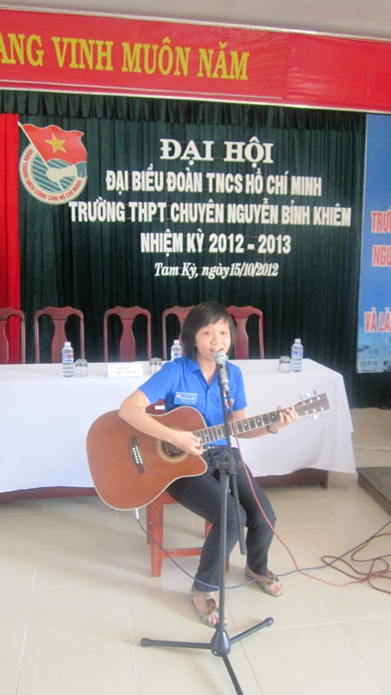

Đại hội Đại biểu Đoàn TNCS Hồ Chí Minh trường THPT chuyên Nguyễn Bỉnh Khiêm nhiệm kỳ 2012 - 2013

Lần cập nhật cuối lúc Thứ năm, 29 Tháng 8 2019 14:01 Viết bởi Administrator Thứ sáu, 26 Tháng 10 2012 06:49
Ngày 15/10/2012 Đoàn trường THPT chuyên Nguyễn Bỉnh Khiêm tổ chức Đại hội Đại biểu Đoàn trường nhiệm kỳ 2012 - 2013. Dự và chỉ đạo Đại hội có đồng chí Nguyễn Thị Ly Phó bí thư Thành Đoàn Tam Kỳ; Thầy Nguyễn Đình Tiến Bí thư chi bộ hiệu trưởng nhà trường các Thầy, Cô giáo trong HĐSP nhà trường và 114 Đại biểu chính thức tham dự Đại hội.
Nhiệm kỳ qua, dưới sự lãnh đạo sâu sát của Ban Thường vụ thành Đoàn và Chi bộ nhà trường, công tác giáo dục chính trị tư tưởng, truyền thống đạo đức cho đoàn viên thanh niên được quan tâm đúng mức góp phần xây dựng tầng lớp thanh niên giàu lòng yêu nước, có lý tưởng cách mạng, bản lĩnh văn hóa, có lối sống đẹp và ý thức cao. Bên cạnh đó, phong trào “5 xung kích phát triển kinh tế xã hội và bảo vệ Tổ quốc”, “4 đồng hành với thanh niên lập thân, lập nghiệp” được triển khai với nhiều hình thức phong phú, đa dạng thu hút đông đảo đoàn viên thanh niên tham gia. Ngoài ra, công tác xây dựng tổ chức Đoàn và Đoàn tham gia xây dựng Đảng luôn được chú trọng, trong nhiệm kỳ, Đoàn trường đã phát triển gần 200 ĐV mới, giới thiệu 18 ĐV ưu tú cho Đảng xem xét và có 12 ĐV là học sinh đã được kết nạp Đảng.
Đại hội đã nghe đồng chí Nguyễn Thị Hoàng Thương thay mặt đoàn chủ tịch đọc dự thảo báo cáo tổng kết công tác đoàn nhiệm kỳ 2011-2012 và đồng chí Châu Văn Thọ đọc phương hướng nhiệm vụ công tác đoàn nhiệm kỳ 2012-2013 và đại hội đã biểu quyết với một số chỉ tiêu trọng tâm đã đề ra.
Phát biểu chỉ đạo Đại hội, đồng chí Nguễn Thị Ly, Phó bí thư thành Đoàn đã biểu dương những kết quả Đoàn trường đạt được trong nhiệm kỳ qua và đưa ra một số nội dung trọng tâm cần tập trung thực hiện trong nhiệm kỳ mới cụ thể như: cần đổi mới và nâng cao chất lượng của công tác tuyên truyền, giáo dục trong đoàn viên thanh niên, tiếp tục giáo dục truyền thống cách mạng, ý chí tự lực, tụ cường và chấp hành tốt các chủ trương, chính sách, pháp luật của Đảng và Nhà nước quy định; Phát động, xây dựng các câu lạc bộ, đội, nhóm; tập trung đẩy mạnh các hoạt động xung kích tình nguyện vì cuộc sống sộng đồng. Bên cạnh đó, Đoàn trường cần quan tâm đời sống, tâm tư, nguyện vọng chính đáng của đoàn viên thanh niên nhất là chú trọng hỗ trợ việc học tập và bồi dưỡng kỷ năng sống cho thanh niên…
Cũng tại Đại hội, Thầy Nguyễn Đình Tiến Hiệu trưởng nhà trường đã phát biểu và biểu dương những kết quả Đoàn trường đạt được trong nhiệm kỳ qua và cũng đã chỉ đạo một số nội dung trọng tâm mà BCH đoàn trong nhiệm kỳ mới cần phải thực hiện.
Đồng Chí Châu Văn Thọ Bí thư đoàn trường thay mặt cho đoàn chủ tịch cũng đã tiếp thu những ý kiến phát biểu chỉ đạo của đồng chí Nguyễn Thị Ly Phó bí thư Thành đoàn Tam Kỳ và Thầy Nguyễn Đình Tiến Bí thư chi bộ, hiệu trưởng nhà trường và sẽ bổ sung vào phương hướng cho nhiệm kỳ đến.
Đại hội đã bầu ra Ban chấp hành Đoàn trường nhiệm kỳ mới gồm 15 đồng chí. Ban Thường vụ gồm 5 đồng chí, trong đó: đồng chí Châu Văn Thọ giữ chức vụ Bí thư Đoàn trường, đồng chí Nguyễn Xuân Tùng và Lê Mai Thanh Đức giữ chức vụ Phó Bí thư.
Dịp này, Đoàn trường khen thưởng cho 5 tập thể đạt thành tích xuất sắc trong hoạt động công tác đoàn và phong trào thanh niên trường học nhiệm kỳ 2011-2012 đó là tập thể: 11/3; 11/4; 12/4; 12/5; 12/6.
Tin bài: Châu Văn Thọ - BTĐT
DANH SÁCH BCH ĐOÀN TRƯỜNG NHIỆM KỲ 2012-2013
|
STT |
HỌ VÀ TÊN |
CHI ĐOÀN |
CHỨC VỤ |
|
1 |
Đ/c Châu Văn Thọ |
Giáo Viên |
Uỷ viên BTV Bí thư |
|
2 |
Đ/c Nguyễn Xuân Tùng |
Giáo Viên |
Ủy viên BTV Phó bí thư |
|
3 |
Đ/c Nguyễn Văn Quang |
Giáo Viên |
Ủy viên BTV CT hội LHTN |
|
4 |
Đ/c Lê Mai Thanh Đức |
11 Chuyên Hóa |
Uỷ viên BTV Phó bí thư |
|
5 |
Đ/c Nguyễn Ngọc Bảo Trân |
11 Chuyên Anh |
Uỷ viên BTV |
|
6 |
Đ/c Phạm Nguyễn Viết Hưng |
11Chuyên Toán |
Uỷ viên BCH |
|
7 |
Đ/c Huỳnh Mai Bảo Lâm |
12 Chuyên Hóa |
Uỷ viên BCH |
|
8 |
Đ/c Nguyễn Thị Hồng Mai |
Giáo Viên |
Uỷ viên BCH |
|
9 |
Đ/c Huỳnh Thị Kim Oanh |
12 Chuyên Tin |
Uỷ viên BCH |
|
10 |
Đ/c Đoàn Nguyệt Quỳnh |
11 Chuyên Anh |
Uỷ viên BCH |
|
11 |
Đ/c Phạm Thị Như Quỳnh |
12 Chuyên Văn |
Uỷ viên BCH |
|
12 |
Đ/c Phan Nguyễn Thu Sương |
12 Chuyên Anh |
Uỷ viên BCH |
|
13 |
Đ/c Nguyễn Thanh Tâm |
Giáo Viên |
Uỷ viên BCH |
|
14 |
Đ/c Nguyễn Văn Thắng |
Giáo Viên |
Uỷ viên BCH |
|
15 |
Đ/c Nguyễn Thị Hoàng Thương |
12 Chuyên Lý |
Uỷ viên BCH |
Một số hình ảnh liên quan:

- 06/10/2021 16:59 - Đoàn trường tổ chức tuyên truyền Luật thanh niên
- 05/10/2021 16:56 - Đoàn trường THPT Chuyên Nguyễn Bỉnh Khiêm tổ chức …
- 07/09/2013 08:30 - Hướng dẫn thực hiện Điều lệ Đoàn TNCS Hồ Chí Minh
- 21/02/2013 09:53 - TRƯỜNG THPT CHUYÊN NGUYỄN BỈNH KHIÊM TỔ CHỨC HỘI T…
- 27/12/2012 07:47 - BAN CHẤP HÀNH ĐOÀN TRƯỜNG THPT CHUYÊN NGUYỄN BỈNH …